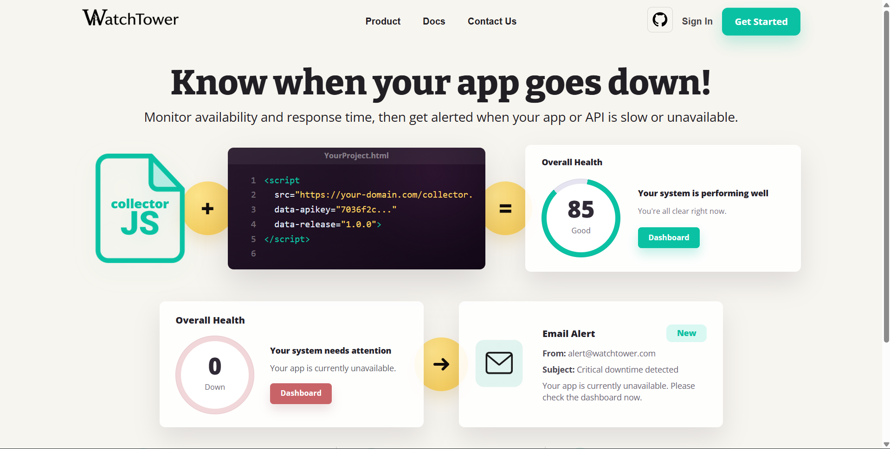
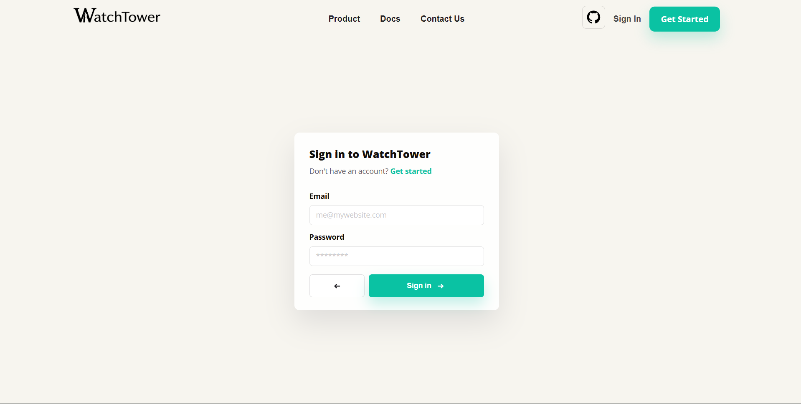
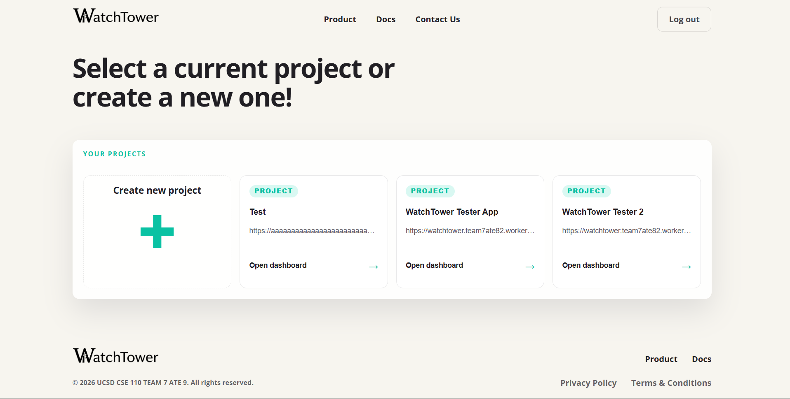
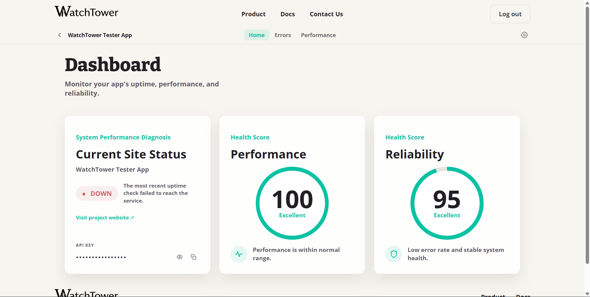
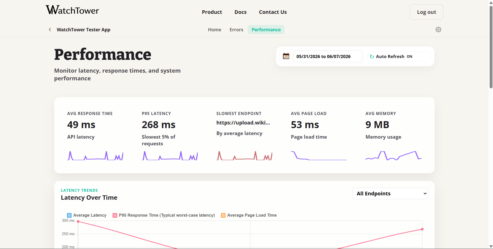
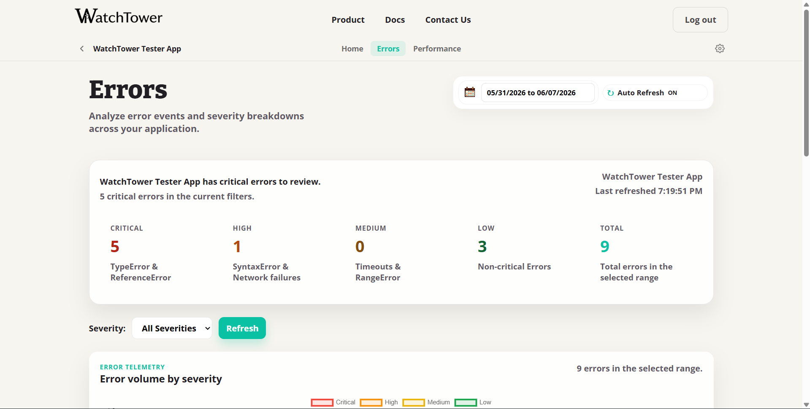

WatchTower
WatchTower is a web application that lets developers monitor the uptime and performance of their web apps. Users register their apps, and WatchTower continuously polls them, surfacing downtime events, performance metrics, and sending email alerts when an app goes down.
Repo Structure
How to Run the Project
Install Dependencies
From the WatchTower/ directory, install backend dependencies:
npm install --prefix backendDownload Environment Files
The current project uses a SQL-based (PostgreSQL) database via Drizzle ORM.
Obtain the appropriate environment files from the project team and place them inside backend/.
This setup requires two files:
WatchTower/
└── backend/
├── .env ← place here
└── .env.test ← place hereBoth files follow this structure:
DATABASE_URL=<your-postgres-connection-string>
PORT=3000
SENDGRID_API_KEY=<your-sendgrid-api-key>
SENDGRID_FROM=<your-verified-sender-email>.gitignore.
Start the App
From the WatchTower/ directory:
npm startThis runs any pending database migrations then starts the Express server. Open your browser and navigate to:
http://localhost:3000Using WatchTower
1. Create an Account and Register Your App
- Open WatchTower in your browser at
http://localhost:3000. - Sign up for an account and log in.
- Navigate to the App Selection page and register your app with a name and (optionally) a URL to monitor for uptime.
- After the app is created, WatchTower generates a unique API key. Copy it — you will need it in the next step.
2. Add the Collector to Your Project
The collector is a single JavaScript file (collector.js) you drop into any web app. It automatically tracks:
- JavaScript errors — unhandled exceptions and promise rejections, with severity classification
- Page performance — load time, DOM content loaded time, Time To First Byte, and JS memory usage
- API latency — intercepts all
fetch()calls and records how long each one takes
Step 1 — Copy collector.js into your project
Grab collector.js from the root of this repository and place it somewhere your HTML can reach:
your-project/
└── scripts/
└── collector.jsStep 2 — Add a single <script> tag
Paste this into the <head> or end of <body> of each page you want to monitor:
<script
id="collector-script"
src="/scripts/collector.js"
data-apikey="YOUR_API_KEY"
data-release="1.0.0">
</script>| Attribute | Description |
|---|---|
| data-apikey | The API key generated by WatchTower when you registered your app |
| data-release | A version string for this deployment (e.g. "1.0.0" or a git SHA) — used to correlate errors to a specific release |
That's it — no build step or package install required. Once the script is on the page, all errors and performance data are sent to WatchTower automatically.
Running WatchTower on a different host or port?
By default collector.js sends events to http://localhost:3000. To point it elsewhere, open collector.js and update the baseUrl on line 17:
const baseUrl = "https://your-watchtower-host.com";Screenshots





